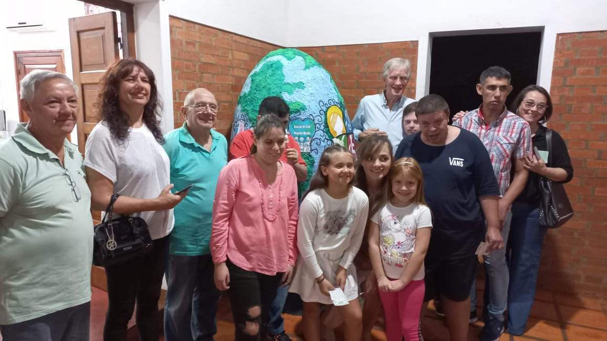
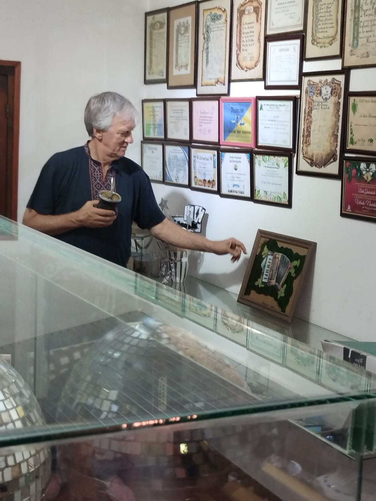
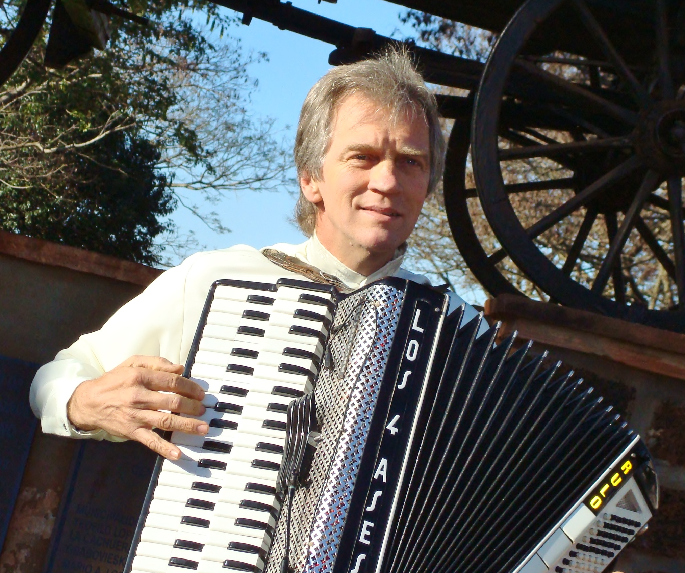

Historia del Museo y Biografía
Historia del Museo
El Museo de Los 4 Ases fue fundado en 2022 con el propósito de conocer mas a fondo la vida y obra de Rulo y su conjunto a lo largo de las epocas. Surgió de la iniciativa de mostrar objetos, menciones y recuerdos que fueron quedando a lo largo de la vida de Rulo.








Biografía de Rulo Grabovieski

Rulo Grabovieski nació en Apóstoles el 28 de Noviembre de 1955, es un compositor y acordeonista argentino de música popular argentina-ucraniana. Rulo comenzó a tocar a los dieciseis años después de haber ido a clases con la profesora Blanquita Oroño. En 1972 fue contratado para tocar en un casamiento y a la semana siguiente -un día martes- otro, con dos acordeones y una batería, no contaban con equipo de amplificación. Así comenzó su carrera como músico actuando en bailes de la zona: en Las Tunas, Azara y San José, y también en esos años participaba como músico y bailarín del Vallet Vesná de Apóstoles. Como integrantes lo acompañaban con otro acordeón Ramón Grabovieski y Lito Solonezen en la batería. Al año se sumó Carlos Herrera y Gerónimo Durán. En el año 1982 se inicia en el plano profesional con Los 4 Ases y la grabación de su primer disco «Apóstoles Ciudad de las Flores», siempre manteniendo el ritmo y el estilo que hasta hoy lo identifica con Kolomeikas y Corridos. Así comenzaron a transitar por las radios y la televisión y por lugares de la provincia que anteriormente no llegaban y también otras provincias como Chaco, Corrientes, Entre Ríos y otros países como Paraguay y Brasil. Con un estilo propio que resulta la mezcla de la música ucraniana y algo de otras colectividades (alemana, brasilera e italiana) sumada a la música regional hace de Los 4 Ases un género particular pero siempre pensando en la fiesta familiar. Participan hace muchos años en la Fiesta Nacional e Internacional del Inmigrante en Oberá, precisamente en la colectividad Ucraniana y en los festivales de toda la región, como el Festival de la Yerba Mate en Apóstoles, Festival del Litoral en Posadas, Festival del Tarefero en Concepción de la Sierra, Festival de la Mojarrita en Azara, Festival del Té en Campo Viera, Festival del Agricultor en Andresito, Fiesta Nacional y Provincial de la Cerveza en Leandro N. Além, Festival de la Canción en Liebig Corrientes. Hoy con un grupo de diez personas (6 músicos, 1 sonidista y 2 utileros), Los 4 Ases llevan la música a muchas fiestas con equipo de sonido, luces y un móvil para el traslado propios.